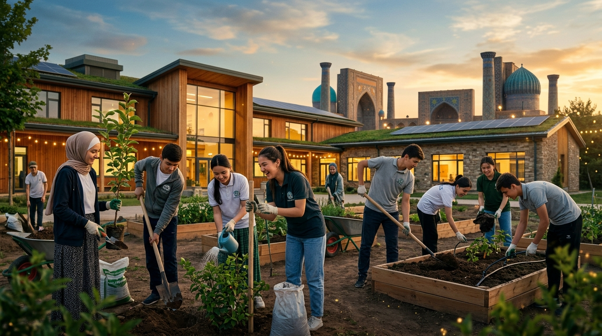
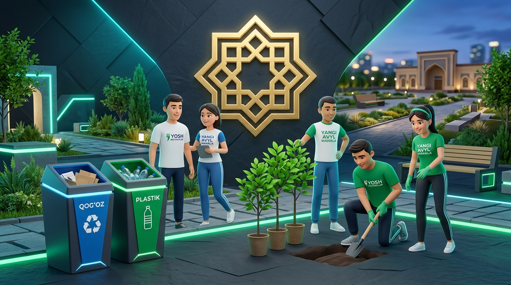

Исследовательский и практический проект учащихся 9 класса. Мы изучили проблему чистоты и экологии в нашей школе и махалле, сопоставили её с Конституцией Узбекистана и разработали работающую гражданскую инициативу по раздельному сбору отходов.

Что отличает активного гражданина от стороннего наблюдателя и какие качества формирует проект.
Активный гражданин — это человек, который знает свои права, добросовестно исполняет обязанности, не проходит мимо беспорядка в своей школе или махалле и готов лично действовать в рамках закона, чтобы сделать жизнь общества лучше.
Не просто написать доклад, а на конкретных фактах и опросе выявить острую проблему школьной среды, юридически обосновать её и предложить реалистичный план действий, который девятиклассники могут осуществить сами.
Чистота и порядок вокруг нас начинаются не с громких лозунгов и не со штрафов, а с простой личной культуры: донести фантик до урны, сделать вежливое замечание и объединить класс ради доброго дела.
Знает Конституцию РУз, уважает законы и помнит, что свобода одного человека заканчивается там, где начинаются права других.
Не проходит мимо сломанной скамейки или брошенного мусора со словами «это не моё дело».
Понимает конституционную обязанность беречь природу (ст. 62) и начинает изменения с самого себя.
Вместо пустой критики предлагает конкретные решения и готов потратить личное время на общее дело.
Уважает мнение одноклассников, умеет слушать других и выстраивать диалог с учителями и махаллей.
Осознает ценность природы, бережет воду, зеленые насаждения и понимает пользу раздельного сбора отходов.
Реальная ситуация на территории нашей школы и прилегающих улицах махалли.
Исследовательский вопрос: Может ли простая школьная инициатива по раздельному сбору пластика и макулатуры силами учащихся изменить привычки ребят и сделать территорию чище без денежных затрат?
Мы провели опрос среди 30 учеников 9-х классов нашей школы. Никаких личных данных не собиралось.
Каждый вывод и шаг проекта мы сверили с официальными нормами на государственном портале Lex.uz.
«Каждый имеет право на благоприятную окружающую среду, достоверную информацию о ее состоянии...»
«Граждане обязаны бережно относиться к окружающей природной среде.»
Выбрасывание отходов в неустановленных местах влечет штраф от 0.5 до 3 БРВ, а повторно — от 3 до 5 БРВ.
Мы сравнили возможные пути по критериям: законность, полезность и реальность для учеников.
| Критерий | Вариант 1: Штрафы и камеры | Вариант 2: Просто плакаты | Вариант 3: Наш выбор |
|---|---|---|---|
| Законность | Ученики не имеют права штрафовать других | Законно, но пассивно | Полностью законно: волонтёрство и сотрудничество с махаллей |
| Полезность | Вызовет обиду и тайный мусор в углах | Плакаты быстро перестают замечать | Убирает корень проблемы: дает удобные экобоксы и меняет привычки |
| Реализуемость | Сложно и дорого (нужны камеры и охрана) | Очень легко, но бесполезно | Идеально для 9 класса: коробки берем бесплатно, делаем сами |
| Бюджет | Большие деньги школы | Пачка бумаги | 0 сум: переработанный картон и краски |
| Итог | Конфликты и недоверие | Мусор останется на месте | Чистый школьный двор и 50+ кг вторсырья! |
Он уважает права учащихся, объединяет школу и махаллю в традициях хашара, не требует денег из бюджета и дает реальный результат: собранный пластик можно сдать, а на вырученные средства купить саженцы в поддержку программы «Яшил Макон».
Пошаговый план: кто, что, когда и каким способом делает.

Команда 9 класса, волонтеры из параллелей, классные руководители и комитет махалли.
4 самодельные точки сбора бумаги и пластика, эко-минутки на уроках и общий субботник.
В течение 1 месяца (4 недели). Взвешивание и подведение итогов каждую субботу.
Через согласие директора, творческий подход, соревнование классов и личный пример.
Плотные картонные коробки из столовой, мешки, маркеры и поддержка учителей.
Сбор 50+ кг пластика и 100+ кг макулатуры, чистый двор и посадка саженцев.
Письменное обращение директору школы, выбор безопасных мест для 4 экобоксов, встреча со старостами классов.
Берем коробки от техники, обклеиваем и маркируем: зеленый — «ПЛАСТИК», синий — «БУМАГА». Развешиваем понятные подсказки.
Короткие 3-минутные выступления перед 7–9 классами: почему важно разделять мусор и как статья 62 Конституции работает на практике.
Взвешиваем собранное сырье, сдаем в пункт приема, а вырученные средства направляем на покупку саженцев для пришкольного сада.
Проектная работа учащегося 9 класса по предметам «Воспитание» и «Основы государства и права».
Главный вопрос темы проекта и наша аргументированная позиция.
Законы и Конституция остаются просто текстом, если граждане не живут по ним. Активные люди наполняют статьи 49 и 62 реальным смыслом и помогают пресекать правонарушения.
Гражданская инициатива разрушает равнодушие. Когда школьники сами навели порядок, они начинают уважать труд уборщиков и бережнее относиться к общему дому.
Малые дела дают быстрый осязаемый эффект: двор становится чище, мусор отправляется на переработку, а махалля преображается без ожидания указаний сверху.
Все правовые акты проверены по официальной базе законодательства Республики Узбекистан Lex.uz.
Статьи 49 (экологические права) и 62 (обязанность беречь природу). Новая редакция от 30 апреля 2023 года.
Статья 91-1: выбрасывание твердых бытовых отходов в неустановленных местах (штрафы от 0.5 до 3 БРВ).
Статьи 11 и 13: полномочия схода махалли в вопросах благоустройства, санитарии и проведения хашара.
Материалы Министерства дошкольного и школьного образования Республики Узбекистан по темам гражданского участия.